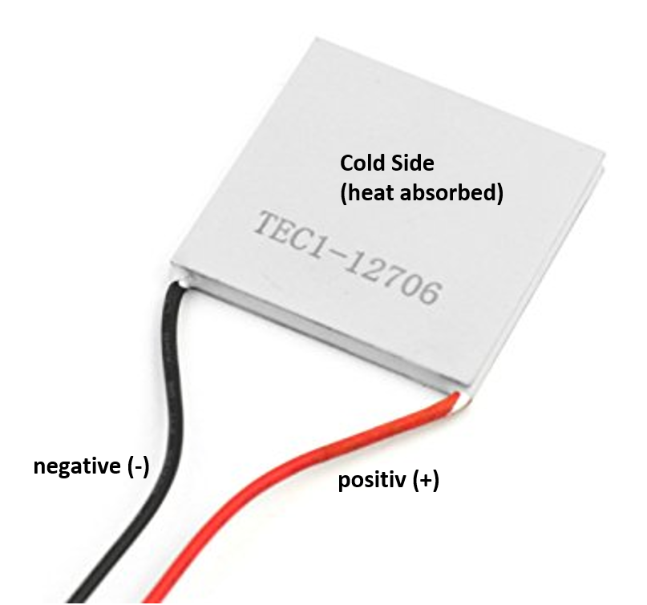
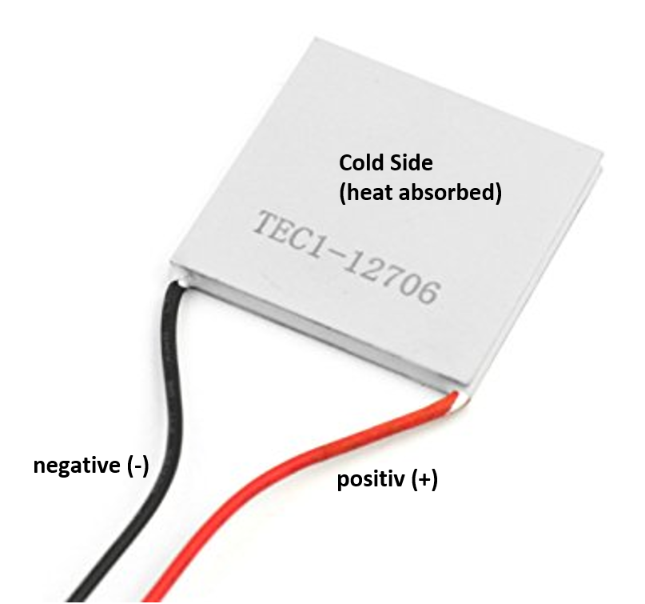
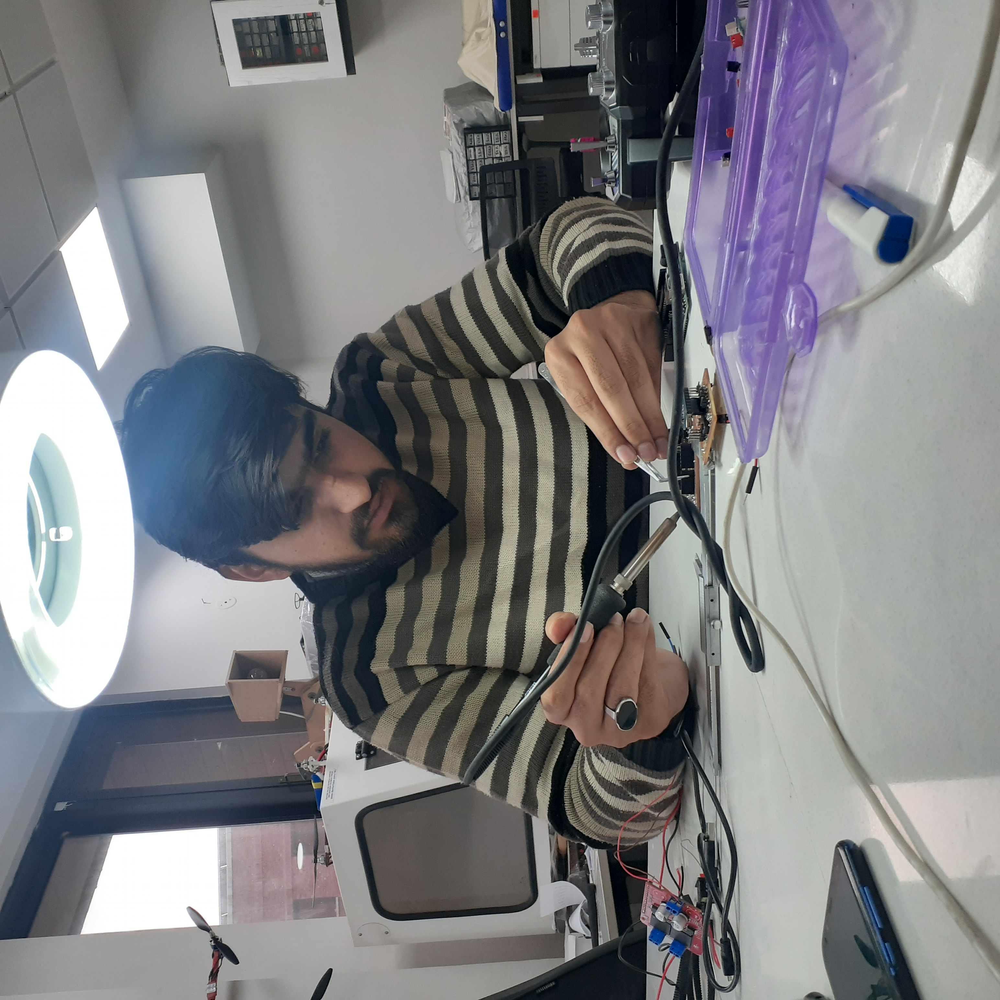
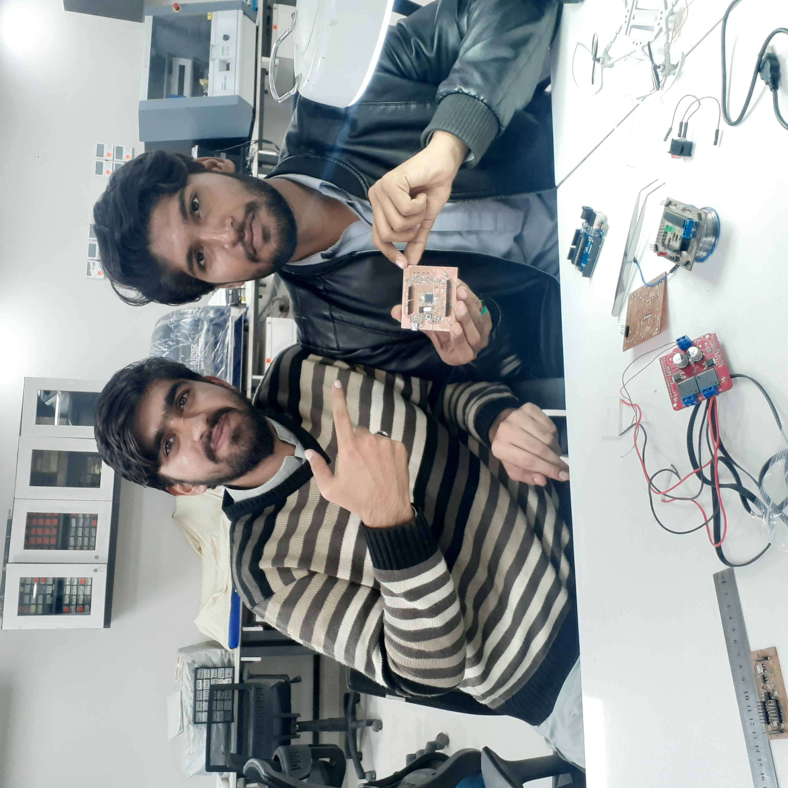
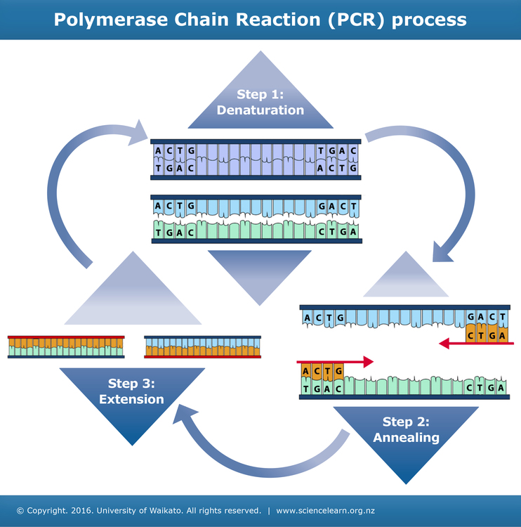
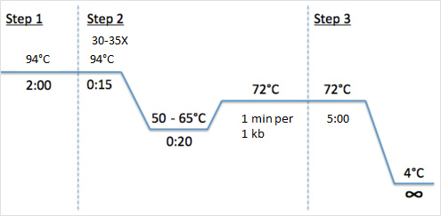
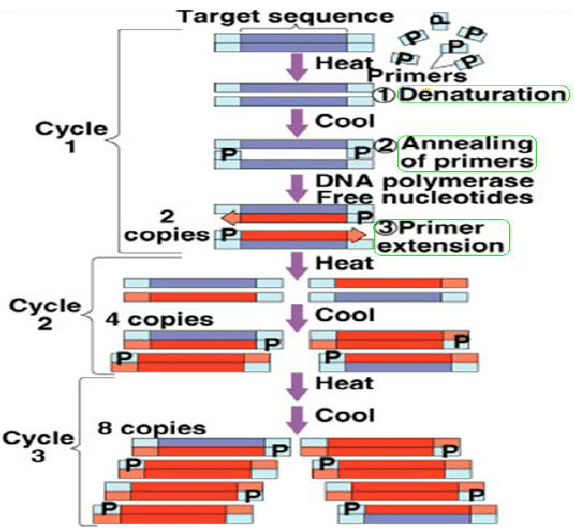
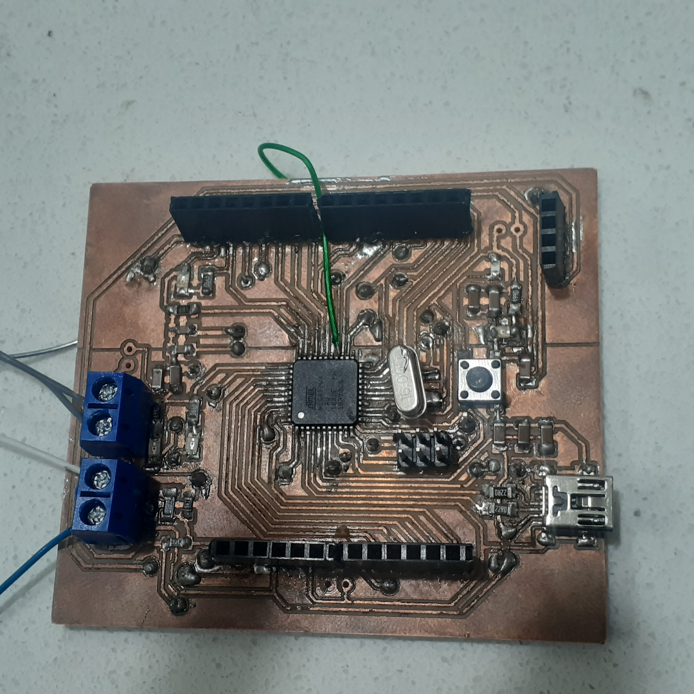

Rehan Abdul Waheed
Introduction
The polymerase chain reaction (PCR) is arguably the most powerful laboratory technique ever invented. The ease with which it can be done, the relatively low cost, and it�s unique combination of specificity and sensitivity coupled with great flexibility has led to a true revolution in genetics. PCR has opened doors to areas hidden to all but a few for most of the history of genetics. Yet, along with the everyman power of PCR has come a tacit assumption that everyone knows how to do it and understands it. My experience is that this is not the case. There is a great deal about PCR that most practitioners do not know and many other things that they should know better than they do. The advent of kinetic, or Real-Time PCR has served to add yet another dimension to this cognitive dissonance, particularly in the realms of experimental as well as primer and probe design along with optimization of experimental conditions. Moreover, as correctly pointed out by Bustin [1] �The comparative ease and rapidity with which quantitative data can be acquired using real-time RT-PCR assays has generated the impression that those data are reliable and can be subjected to objective analysis.� What has occurred in fact is an even higher level of sophistication that has either been taken for granted or ignored entirely:Below is the sample image of our final design.

Our purpose was to designe a machine which follows a series of cycles to achieve the required results. PCR is a common tool used in medical and biological research labs. It is used in the early stages of processing DNA for sequencing, for detecting the presence or absence of a gene to help identify pathogens during infection, and when generating forensic DNA profiles from tiny samples of DNA.The most important parameter of PCR machine is temperature, beacuse for a thermocycle you need to maintain some special ranges. As teamwork is the ability to work together towards a common vision, So I Abdul jalil ahmad and my patner Rehan Abdul Waheed,worked collectivly in the designing and manufacturing of PCR machine.

High Level Design
Given below in the detail information of the components along with their snaps.


 


- The Cooling Fan
- Heat Sink
- Sample Holder
- DC Power Supply
- PWM Motor Driving Shield
- Piltiers
- 8pin Lcd
Deligation of Tasks
| Task | Name |
|---|---|
| Literature review | Combined |
| PCB Software Design | Rehan Abdul Waheed |
| PCB Soldering | Abdul Jalil |
| Ardunio Programming | Rehan Abdul Waheed |
| Components Assembly | Combined |
| Documentation | Abdul Jalil |
| Programming logic | Rehan Abdul waheed |
| Sensors Installment | Rehan Abdul Waheed |
| Components Design and Arrangement | Abdul Jalil |
| PCB Debugging | Abdul Jalil |
Intellectual Properties and Ethics Considerations
The sites and the sources which we visited are given
Visit Integrated DNA Technologies.net!
After a series of hardwork and struggle we achived successful compilation of thermocycler.So, it has copy right reserves.However , you can use it by mentioning our names in your project/report.
Bill Of Materials
Design
The Design process has several layers to it. Electrical Design, Software Design, Final Hardware Assembly Which are elaborated below.Electrical Circuit

Here is our elcetrical circuit of PCR. For the demonstration purpose we used arduio uno sheild. Bill of material is mentioned above. Our fulfill operation of PCR is very much dependent on exact proposed values of components. The values of components was set up after plenty of hit and trail method.
PCB Layout
Here is the pcb layout in eagle software.
Here is the snap of manufacturing of pcb in roland machine.


Here is the our final pcb after traces and drills.


Now, here comes the most interesting job, that was soldering the micro components on PCB. I never done soldering before on such micro scale,but we had to do that. here are some glipmse of soldering
 
Here is the snap of boot up IC

Here is the snap of successful boot up IC

After the job of several hours we got a fully solded PCB
TroubleShooting Of PCB
As you can see clearly that their is an external wire in pcb

this is because we forgot to connect the IC connections with the header.Since it was our first hand experience soldering over two layer PCB, so what we did, we didn't connect the top and bottom layer of PCB throughly,Because we thought that by just putting a piece of wire in via could connect both sides but we were wrong, So in order to improve our mistake, we performed connectivity test for each via. during connectivity test we found my short connections. So we separat their paths by dispatching the solder wire between them. In this way we got a working PCB in our hands.
Software Development
Our Program logic is based on the given mechanism
  
Design of finished Product
Here is the desing of complete enclosure.Initially, we proposed a horizontal rectangle shape box for our enclosure but the drawback was that we couldn't had a very clear view inside the circuit.So, we again put a deep eye over it and came up with a cube. Now as you can see that there is a very fine place for the placement of samples.
.png)
Along with 2D design,We also made a 3D model of enclousre. Snaps are attached below. But the problem was that , for 3D printing of enclosure;we need to had 2 days, but we were running out of time.That's why we printed 2D model in laser cut machine.
.png)
Results
Conclusions
The most important thing which we learned in this project, is project managment.Secondly, we learned practical skills like, how your imaginations turn into reality.we learned how to work in a pair. After that, we learned designing of PCB. Before that we didn't play a lot with the PCB's. In PCB, the selection of component is the most important part. The best way to choose a suitable component in your PCB is datasheet. Use datasheet effectivly, Because it will provide you each and every minor details for your wanted results. In our case, we used datasheet a lot beacuse particularly thermistor was not reading the temparture properly, after studing the datasheets we deduced that we were using a wrong values of resistors. After that we got our desired results. Bootloader was run on its first attempt but failed to run usb port. PC was not recognizing the port. This was the most critical point of our project. We took help from some relevent person's but they also hands up in front of this monster hurdle. At that moment we were very worried about our project. After Spending a big amount of work in PCB Connectivity test we got to know that our IC was short. A human eye couldn't detect that but connectivity test recognised that. So very precisely and carefully we successfully separted the IC's path from each other. The Snaps of before and after trobleshooting are given below.
Appendix
Here is our downloadable stuff
Click on the thumbnails to download the files:
PCB files
Ardunio File
.jpg)
Enclosure File
Given below is the bill of material along with their commercial cost